A walkthrough of the OpenFlight on-screen apps: the Interactive kiosk (7" touchscreen or TV), the Scoreboard display, and the Web Remote. It covers every tab, sub-tab, and setting, plus VoiceOver/screen-reader support and the supported control methods.
These screenshots come from the app in mock mode (
scripts/start-kiosk.sh --mock), so the numbers are simulated. The layout and controls match a live session.
| Surface | Where it runs | What it's for |
|---|---|---|
| Interactive (formerly "TV" mode) | 7" kiosk touchscreen, or scaled up on a TV | Full control - hit shots, pick clubs, browse analytics/history, change settings. Operable by touch or remote. |
| Scoreboard | A TV or monitor across the room | Passive, glanceable stats you read from a distance. Updates automatically; still operable by remote/touch. |
| Web Remote | Any phone/tablet browser on the same network (/remote) |
A D-pad + OK + Back to drive whichever display is in view, no extra hardware. |
Interactive and Scoreboard are the same app in two view modes - you pick one on first run and can switch anytime in Settings.
Launch the kiosk from the Raspberry Pi:
scripts/start-kiosk.sh # Default: rolling buffer + sound trigger
scripts/start-kiosk.sh --mock # Development/demo mode, no radar required
scripts/start-kiosk.sh --kld7 # With K-LD7 angle radars (launch angle / aim)
The script handles the virtual environment, builds the UI, and opens the display in
full-screen Chromium. The web UI is also reachable from other devices at
http://<pi-ip>:8080.
The first time a larger external screen connects, OpenFlight asks how you're using it. The Pi auto-detects the screen (EDID/CEC) and pre-highlights the likely option with a DETECTED badge. The small 7" kiosk panel skips this and defaults to Interactive.
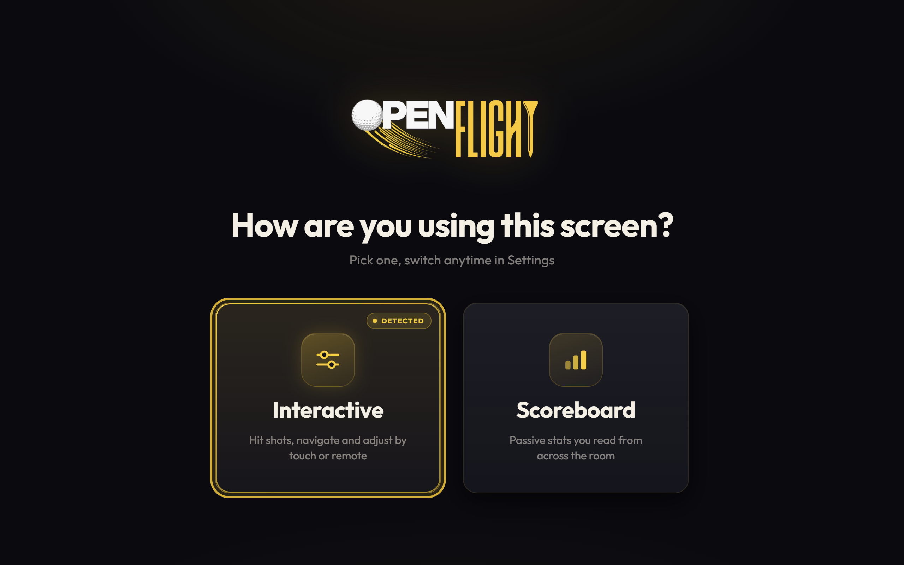
OpenFlight saves your choice per device and applies it live. Change it anytime in Settings → View mode (no reload needed).
Present on every tab:
The navigation tabs are LIVE · ANALYTICS · HISTORY · DEBUG, with an optional CAMERA tab. By default Debug is shown and Camera is hidden - toggle both in Settings → Navigation. (The ANALYTICS label is localized; it reads "Stats" in several languages.)
At the start of a session you choose the club you're hitting. Clubs are grouped into Irons, Hybrids, Woods (and wedges). The selected club is used to estimate carry, roll, and total distance.
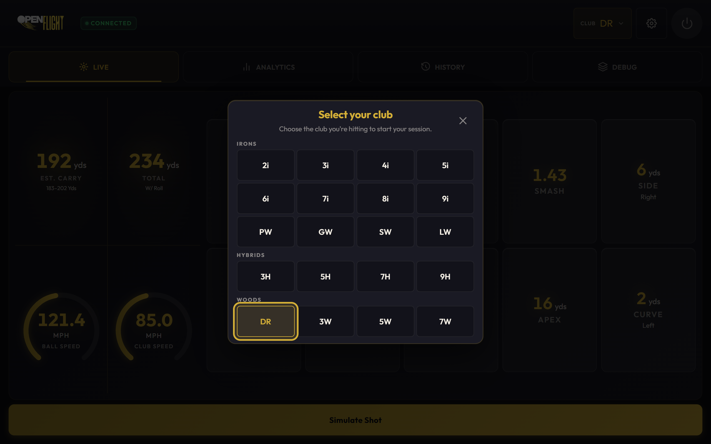
The main shot screen. After each shot, the metrics animate in. The large left cards show Estimated Carry and Total (with roll); the gauges show Ball Speed and Club Speed; the grid shows launch, path, spin and shape metrics. Each metric shows a quality cue (e.g. Low / High / Perfect) and, for launch/angle metrics, its data source (Radar, Camera, or Estimated - Mock in demo mode).
In mock/demo mode a Simulate Shot button appears at the bottom to inject a shot.
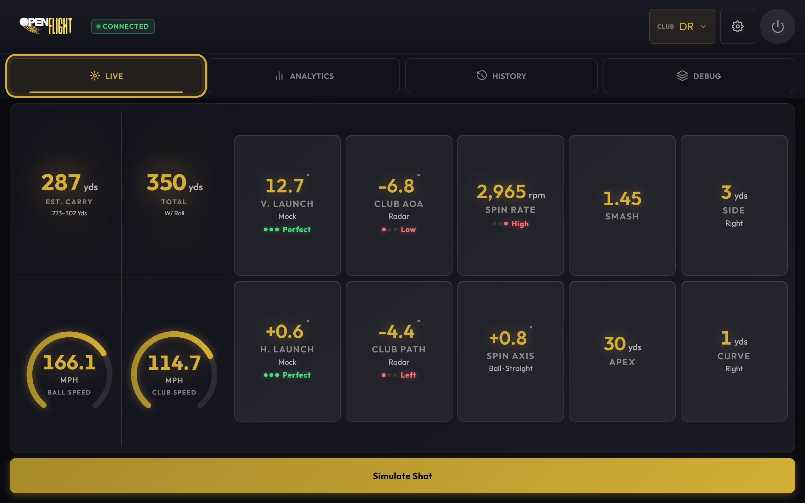
See the Metric glossary for what each number means.
Session aggregates, charts, and coaching. A row of sub-tabs - Home, Clubs, Trends, Coaching, Shots - switches between views.
The Filters button (top-right) opens a panel that narrows the data set for all sub-tabs at once. The shot count beside it shows how many shots match. Two filter sections, each a row of chips:
A badge on the button shows when a filter is active; Done closes the panel.
Note: the Trends sub-tab has its own additional club-group pills (below), separate from this global Club filter.
Headline session averages - Avg Carry, Avg Ball, Avg Club - a tile row of Avg Smash, Avg Launch, Avg Spin, Consistency (±yds), Shots, and a chart that adapts to your data: an Avg Carry by Club bar chart when several clubs are present, or a carry distribution histogram for a single club. Clear Session (bottom) wipes the current session.
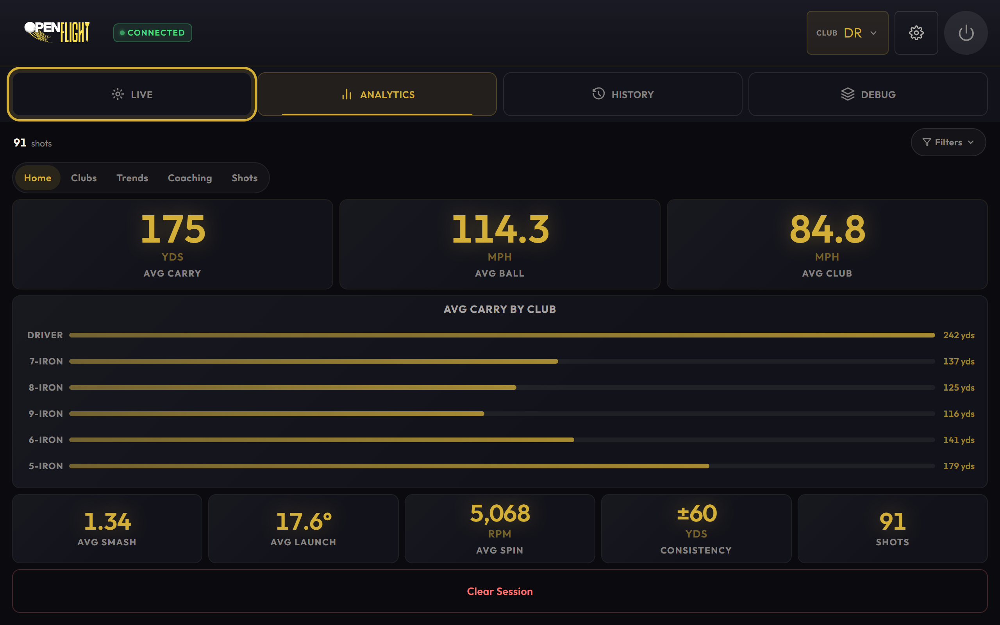
A Club Overview table to compare gapping across your bag - per club: Median (yds), Gapping (yardage step to the next club), Longest, and Hits - plus shot-dispersion and ball-trajectory views. Respects the active Club filter.
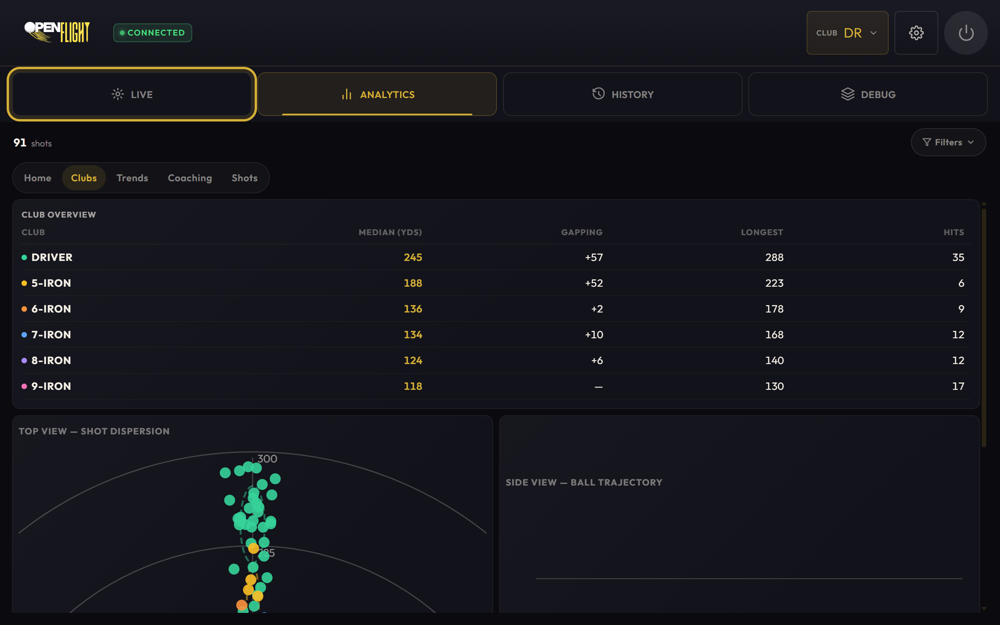
How your numbers move across the session. Club-group pills at the top - All · Driver · 3W · Hybrid · Irons · Wedge (only groups present in your data appear) - scope every chart below.
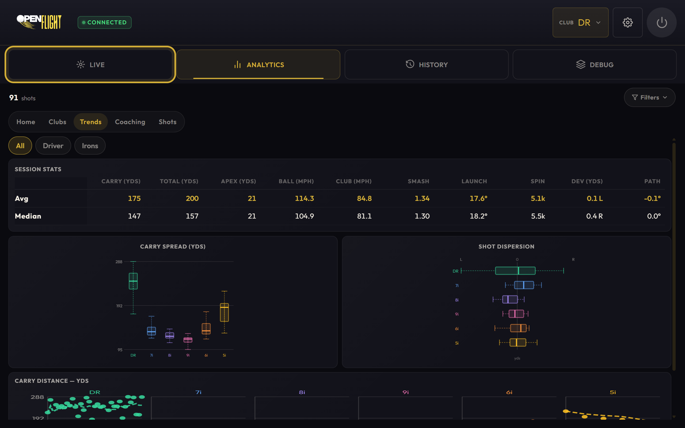
Turns your shot pattern into prioritized guidance. Four blocks:
Below these, a Know Your Distances table gives, per club: Avg, a Reliable number (avg − 1σ, ~your "go-to" carry), a Conservative number (avg − 2σ), and shot count.
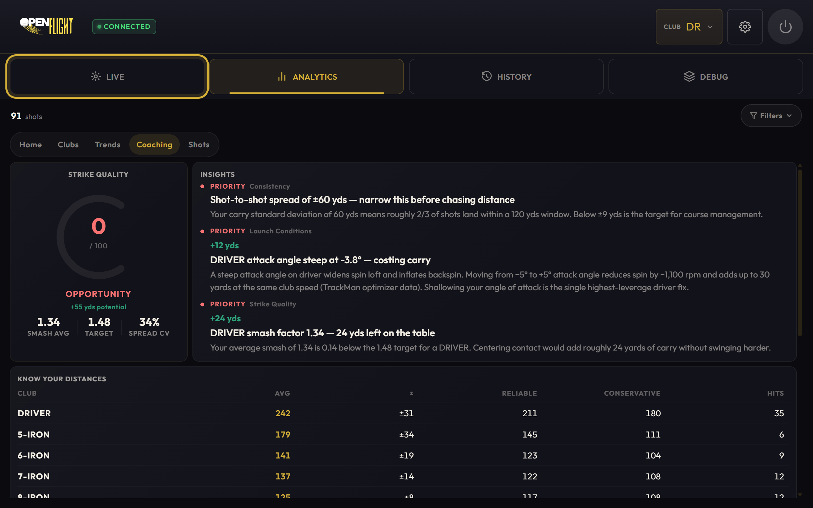
The full per-shot table for the active filter, newest first, 12 per page. Each row is color-coded by shot quality, and # and Club are always shown.
The Columns button (top-right, with a badge showing how many are active) opens a picker to choose exactly which metrics appear. Toggle any of 18 columns across five groups; Reset restores the defaults (★). Every column is defined in the Metric glossary.
| Group | Columns |
|---|---|
| Distance | Est. Carry ★, Total, Roll, Apex, Deviation (offline ±) |
| Speed | Ball Speed ★, Club Speed ★, Smash |
| Launch | V. Launch ★, H. Launch, Club AoA |
| Club | Club Path, Face-to-Path |
| Spin | Spin Rate ★, Spin Axis, Backspin, Sidespin, Shot Shape |
★ = on by default (Est. Carry, Ball Speed, Club Speed, V. Launch, Spin Rate). The same Columns picker drives the History → session detail table.
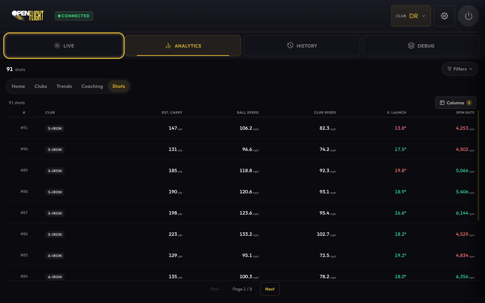
Coaching is rules-based, not AI guesswork - it compares your averages against per-club optimal windows derived from TrackMan/PGA Tour benchmarks (analysis.ts, clubThresholds.ts).
Recognised fault chains include steep attack angle, low-face gear effect, casting / early release, off-center contact, stalled hips / flip, excess spin, out-to-in slice, face-to-path mismatch, path deviation, and tempo inconsistency.
Past Sessions - every recorded session with its date, time, and shot count. Sessions with shots show a › chevron; tap one to open its detail.
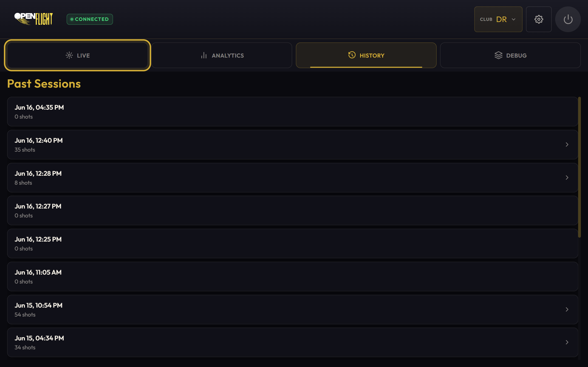
The session detail is the same paginated per-shot table used by the Analytics Shots tab - so it has the identical Columns picker: add or remove any of the 18 metrics across Distance / Speed / Launch / Club / Spin (all defined in the Metric glossary), with Reset to defaults. Prev / Next page through the shots, 12 per page.
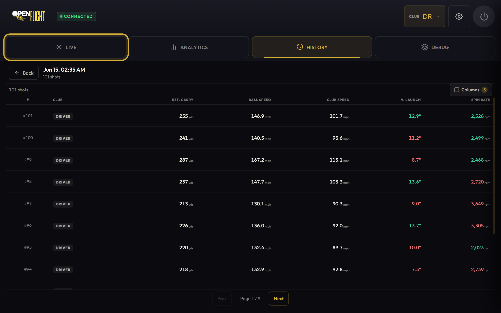
Hardware and signal diagnostics. Up to three sub-tabs:
Status - system mode (e.g. MOCK / rolling-buffer), radar connection state, and trigger counts. A Record toggle (top-right) captures raw data for later analysis.
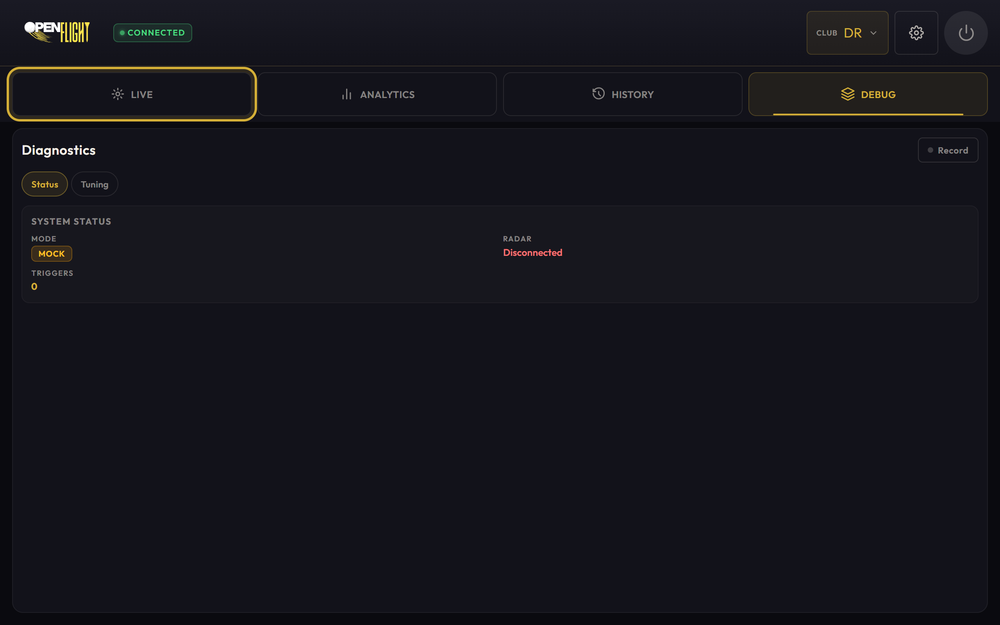
History - a recent trigger accept/reject log (shown only in rolling-buffer mode; hidden in mock mode).
Tuning - live signal/trigger tuning for hardware setup.
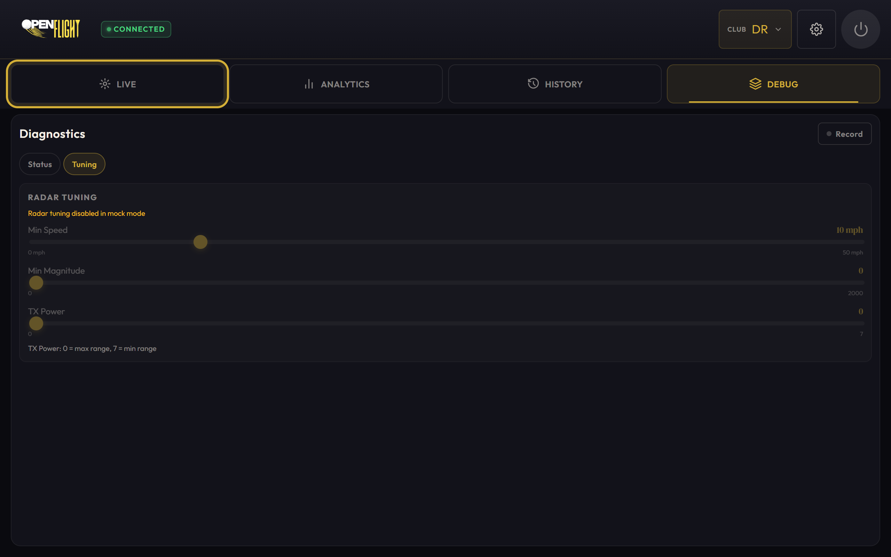
The Camera and Debug tabs can be shown or hidden in Settings → Navigation (Debug is on by default, Camera is off).
An optional tab for the ball-tracking camera - hidden by default; turn it on with Settings → Navigation → Camera Tab. Once enabled it appears as a fifth nav tab.
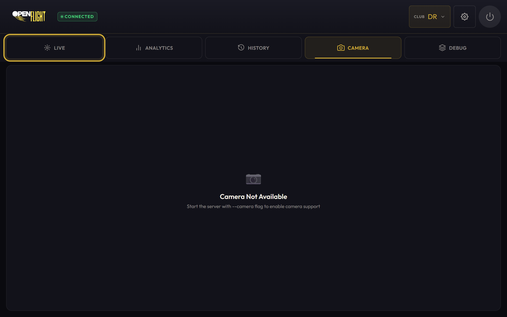
Above: the Camera tab on a --mock server with no camera attached - start the
server with the camera flag (or attach a camera) to get a live feed. It shows a
Camera Feed with two controls:
The tab reflects whatever state the camera is in:
| State | What you see |
|---|---|
| No camera hardware | "Camera not available" |
| Camera off | "Camera disabled" prompt to enable it |
| Enabled, not streaming | "Stream paused" with a ball-detection readout (detected + confidence %) |
| Streaming | Live video with a ball-detected: NN% overlay |
| Stream error | An error message with a Retry button |
When the camera is present and streaming, the Scoreboard's left panel shows the live feed in place of the trajectory/dispersion visualizer.
A passive, big-type display for watching from across the room. It auto-updates with every shot and needs no interaction, though a remote or touch still works.
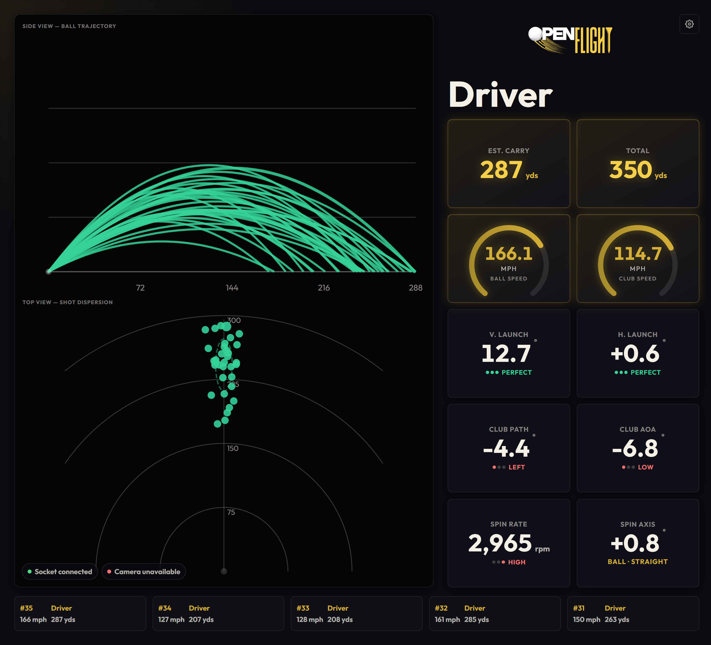
Every screen - the 7" kiosk, an Interactive TV, and a Scoreboard - is a thin client of the one Flask server on the Pi. The screens never talk to each other directly: each holds a live Socket.IO connection to the server, and the server broadcasts events to all connected screens at once. Run as many displays as you like; they all mirror the same live session.
hit a shot
radar ─► Flask server ──broadcast──► 7" kiosk (Interactive)
│ (Socket.IO) ├──► TV (Interactive)
mobile app ◄───┤ ├──► Scoreboard
web remote ────┘ └──► mobile app
| Event | Trigger | Effect on all screens |
|---|---|---|
shot |
You hit a shot (or Simulate Shot) | The shot appears on every screen instantly |
session_state |
A screen connects or refreshes | That screen catches up with the full current session - late joiners aren't left behind |
club_changed |
You change the active club | All screens switch club |
session_cleared |
Clear Session | All screens clear |
camera_status / debug_toggled / radar_config |
Toggled on any screen | Broadcast to all |
remote_key |
Web Remote D-pad press | Moves focus on the display |
accessibility_prefs_update |
Mobile app pushes prefs | Displays update live |
The shot path runs radar → server → broadcast shot → every screen renders it.
No screen is the "primary" one. Open a Scoreboard mid-session and the server replays
the full session to it on connect.
Shots are fully shared; settings are mostly per-device:
localStorage). Changing them on one screen does not change another, so you can
run a Scoreboard in yards while the kiosk shows metres.Shots, club, and session state stay shared live across all screens. Display preferences stay local to each screen, and only the mobile app pushes a subset of settings out to every display at once.
Open with the ⚙ icon. The drawer is identical in both view modes (the kiosk adds a Navigation section). Settings sync from the mobile app when it's connected.
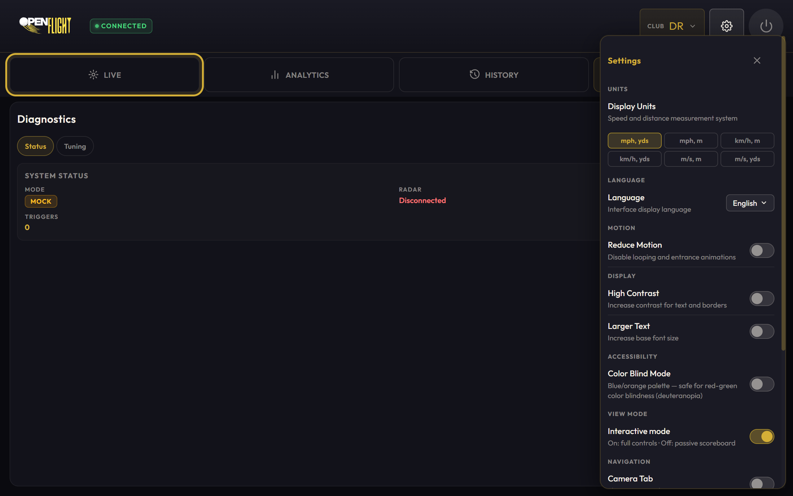
| Section | Control | What it does |
|---|---|---|
| Units | Display Units | Pick the speed/distance combo: mph, yds · mph, m · km/h, m · km/h, yds · m/s, m · m/s, yds. |
| Language | Language | 16 languages (see below). |
| Motion | Reduce Motion | Disable looping and entrance animations. |
| Display | High Contrast | Increase contrast for text and borders. |
| Display | Larger Text | Increase the base font size. |
| Accessibility | Color Blind Mode | Blue/orange palette - safe for red-green color blindness (deuteranopia). |
| View Mode | Interactive mode | On: full controls · Off: passive scoreboard. |
| Navigation (kiosk only) | Camera Tab | Show/hide the camera tab in navigation. |
| Navigation (kiosk only) | Debug Tab | Show/hide the debug tab in navigation. |
| Pair Mobile | QR code | Scan from the OpenFlight mobile app to pair over Wi-Fi/BLE. |
Languages: English, Español, Français, Deutsch, Português, Italiano, Nederlands, Svenska, Norsk, Dansk, Suomi, 日本語, 한국어, ภาษาไทย, 中文简体, 中文繁體.
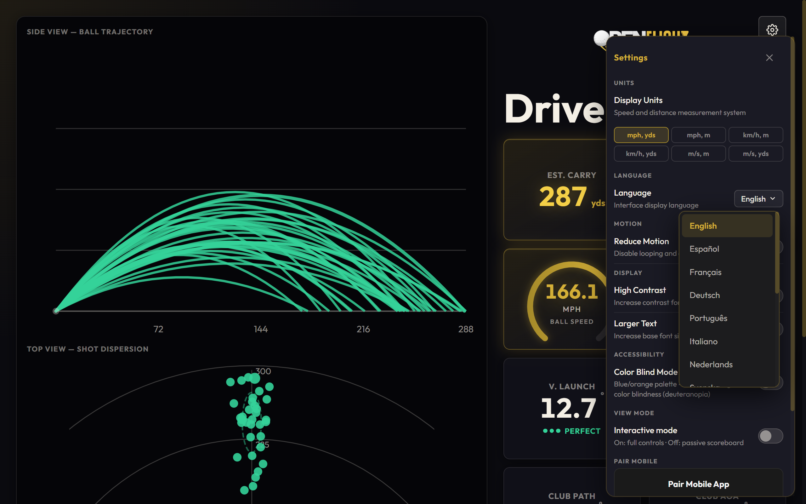
Scroll to the bottom for the Pair Mobile QR code:
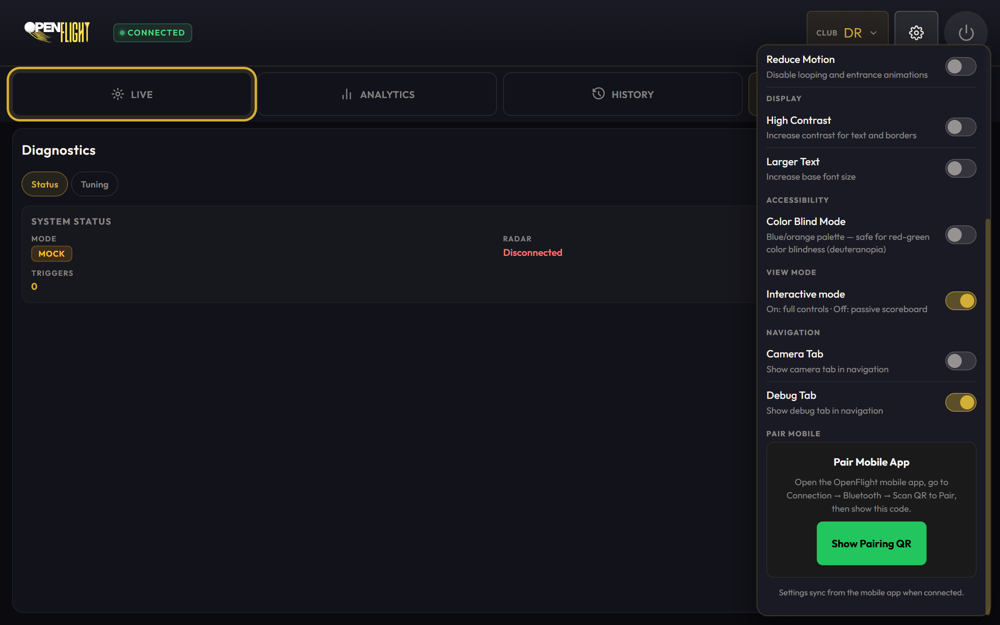
OpenFlight runs fully without sight or touch.
Visual adjustments (Settings): Reduce Motion, High Contrast, Larger Text, and Color Blind Mode. OpenFlight saves each per device and applies it live.
Screen reader support (VoiceOver on iOS/macOS/tvOS, TalkBack on Android, NVDA/JAWS on desktop):
° is read as "degrees". Placeholders read "Club Path: no
data".These behaviors are exercised by the manual test plan in docs/test-plans/screen-reader-voiceover.md.
The UI accepts three input families, all converging on the same focus engine (arrow keys + Enter / Esc):
Direct on the 7" kiosk panel or any touchscreen TV.
On a TV, Up/Down/Left/Right move a large focus ring to the nearest control,
OK/Enter activates it, and Back/Esc closes a dialog. Spatial navigation and
the 10-foot focus ring turn on in TV mode (?tv=1, or auto-detected on smart-TV
browsers).
| Remote button | Key | Effect |
|---|---|---|
| D-pad Up/Down/Left/Right | Arrow keys | Move focus |
| OK / Select | Enter | Activate focused control |
| Back / Exit | Esc | Close panel / dialog |
There are several ways to get a remote's presses into the Pi (full setup in docs/tv-remote-control.md):
| Path | Hardware | Best for |
|---|---|---|
| HDMI-CEC | none (uses the HDMI cable) | A TV on HDMI using its own remote. |
| FLIRC USB-IR | ~$25 USB dongle | DisplayPort, or one brand-agnostic remote. |
GPIO / USB IR (ir-keytable) |
~$2 IR receiver | Cheap IR alternative to FLIRC. |
| Bluetooth HID remote / air-mouse | a BT remote | No line-of-sight; pairs like a keyboard. |
| Native smart-TV browser | none | Loading the kiosk in a Samsung/LG/Android TV browser - the TV's remote drives it natively, zero setup. |
HDMI-CEC is built into the cable; enable it on the TV under its brand name:
| Brand | CEC setting name |
|---|---|
| Samsung | Anynet+ (HDMI-CEC) |
| LG | SimpLink |
| Sony | Bravia Sync |
| Philips | EasyLink |
| Panasonic | VIERA Link |
| Vizio | CEC |
| TCL / Hisense (Android TV) | CEC / T-Link / HDMI-CEC |
DisplayPort has no CEC channel - use FLIRC (or another IR/BT path) there.
The no-hardware fallback. On any device on the same network, open:
http://<pi-ip>:8080/remote
You get a D-pad, OK, and Back. Presses relay over the existing connection to drive
the display's focus. The display must be in TV mode (?tv=1, or auto-detected
on smart-TV browsers) for the relayed keys to move focus. Navigation-only -
destructive actions (like shutdown) still require their on-screen confirmation.
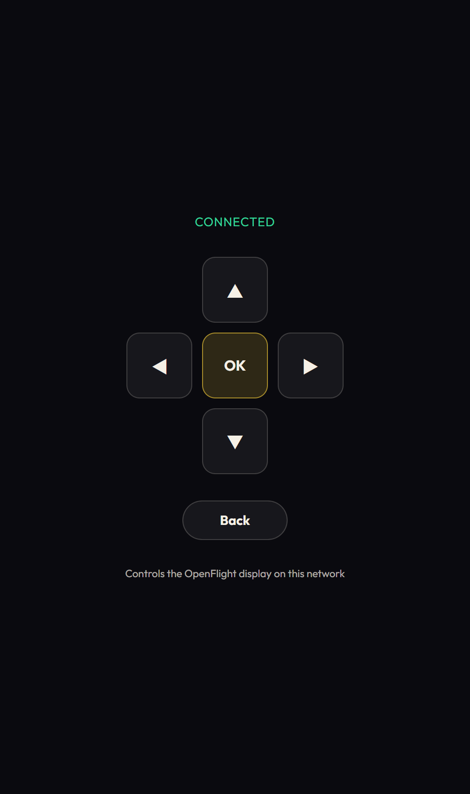
The OpenFlight mobile app (iOS/Android) mirrors live shots, keeps an encrypted on-device history, and manages your club bag. It connects two ways: over Wi-Fi (Socket.IO, same as the screens) when both are on the network, or over Bluetooth LE when Wi-Fi isn't available. Both start from the same QR pairing.
/api/pair-qr, which is localhost-only (returns 403 to
anything off the Pi).The Pi advertises a BLE GATT peripheral named OpenFlight with four
characteristics: Shot (Pi → phone, new shots), Status (Pi → phone, events
like session_cleared), Command (phone → Pi), and Challenge (Pi → phone,
the current auth nonce). All payloads are JSON.
Every connection re-authenticates with an HMAC challenge - proving both sides hold the same secret without ever sending it:
Phone Pi
│ read Challenge ─────────────────────►│ publishes a fresh random nonce
│◄──────────────── nonce │ (rotates every 240s, valid ≤300s)
│ HMAC-SHA256(secret, nonce) │
│ write Command: auth_challenge ──────►│ constant-time compare
│◄──────────── authenticated │ valid until the nonce expires (≤5 min)
Once authenticated, the phone asks for the current session (get_session) and pushes
its accessibility prefs (set_prefs) without any user action. From then on it
receives each shot as a notification (a full shot, or a compact short-key form for
large payloads), and can send set_club / clear_session. The server caps accepted
commands at one per second.
Connection lifecycle: the app moves through idle → scanning → connecting → connected; on an unexpected drop it auto-reconnects with a 3s / 6s / 12s backoff (up to 3 tries). On Android it first requests the Bluetooth scan/connect and location permissions. Full protocol: docs/mobile-ble-protocol.md.
Once connected (either transport), the app's accessibility prefs sync to the displays (see How the screens stay in sync).
All 18 metrics selectable as columns in the Shots tab and History detail, grouped exactly as they appear in the Columns picker.
| Group | Metric | Meaning |
|---|---|---|
| Distance | Est. Carry | Estimated carry distance (air only); spin-adjusted when available. |
| Distance | Total | Carry plus a club-specific roll estimate = total distance. |
| Distance | Roll | Run-out after landing (Total − Carry). |
| Distance | Apex | Peak height of the shot. |
| Distance | Deviation | Carry offline distance from the target line at landing (+ right / − left). |
| Speed | Ball Speed | Speed of the ball just after impact. |
| Speed | Club Speed | Clubhead speed at impact. |
| Speed | Smash | Smash factor = ball speed ÷ club speed (strike efficiency). |
| Launch | V. Launch | Vertical launch angle (degrees up). |
| Launch | H. Launch | Horizontal launch direction vs. target (+ right / − left). |
| Launch | Club AoA | Angle of attack - descending (−) or ascending (+) strike. |
| Club | Club Path | Club's horizontal travel direction at impact (+ in-to-out / − out-to-in). |
| Club | Face-to-Path | Face angle relative to club path - the main curvature driver. |
| Spin | Spin Rate | Total spin in RPM. |
| Spin | Spin Axis | Tilt of the spin axis (− draw / + fade). |
| Spin | Backspin | Vertical spin component (Spin × cos axis) - drives lift/height. |
| Spin | Sidespin | Horizontal spin component (Spin × sin axis) - drives curve. |
| Spin | Shot Shape | Label from spin axis: Strong Draw · Draw · Straight · Slight Fade · Strong Fade. |
The Live tab also shows two readouts not in the column picker: Side (lateral offline distance) and Curve (total left/right curvature).
Quality cues (Low / High / Perfect) appear under each metric; launch/angle cards also show the data source (Radar, Camera, Estimated, or Mock in demo mode).
Generated for OpenFlight. To refresh screenshots, run scripts/start-kiosk.sh
--mock and recapture the views under docs/images/user-guide/.